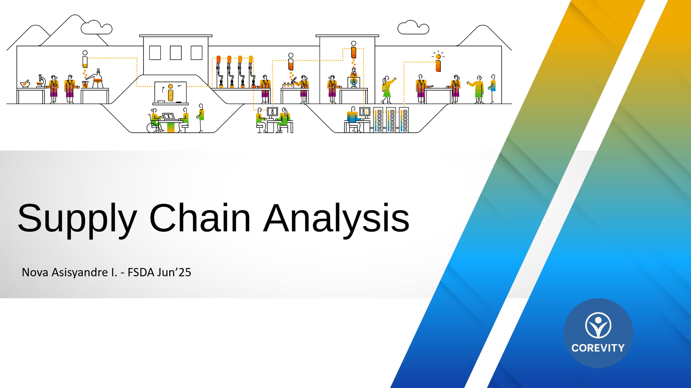
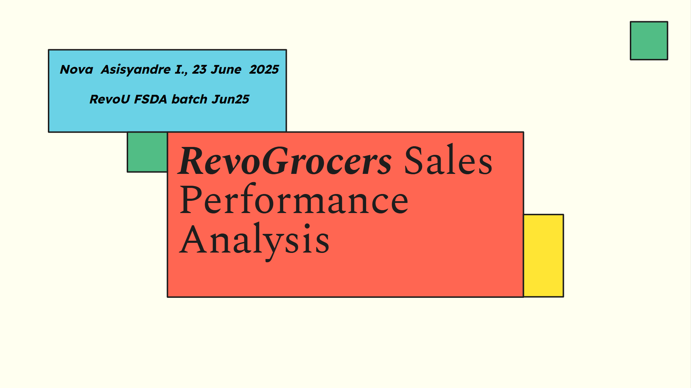
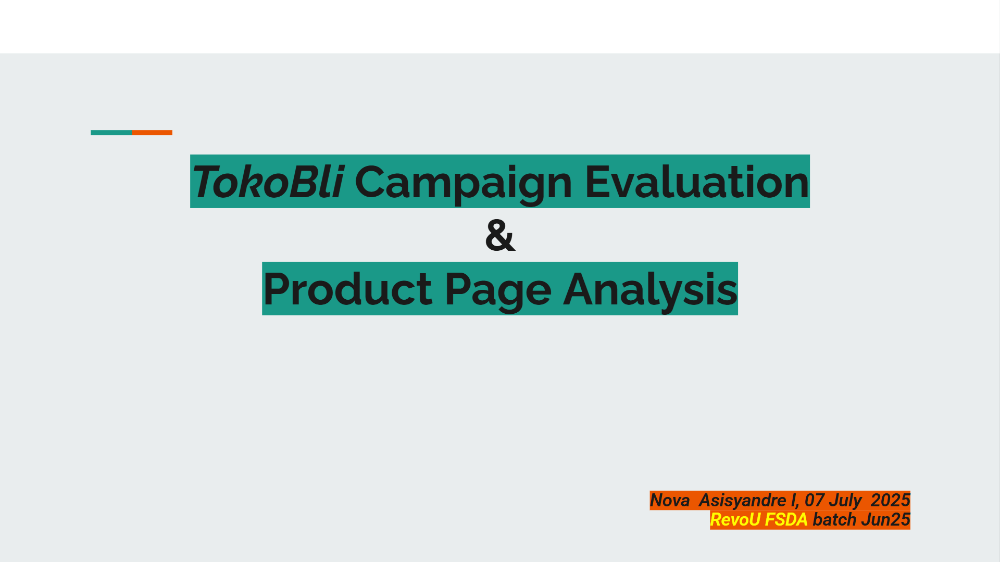

.jpg)
About Me
Data-driven analyst with hands-on operations experience and a commitment to integrity and measurable impact. As a Warehouse Supervisor, I designed and implemented a control and reporting system that improved data accuracy and reduced inventory discrepancies (an estimated 20%), streamlining workflows and enabling faster, evidence-based decisions. I apply data visualization, stakeholder communication, and process-improvement methods, and I am actively upskilling in SQL and Python to turn operational data into clear actions. Collaborative and results-focused, I bring a practical business perspective that helps teams prioritize work and improve KPIs. I am eager to bring this blend of operational experience and analytical skill to deliver reliable, measurable value as a Data Analyst.
Working Experiences
Warehouse Supervisor, CV. Berkat Saintifindo
September 2023 – Present- Streamlined warehouse operations by standardizing procedures and using real-time inventory management, cutting shipment processing time by 25% and improving responsiveness.
- Led and developed an 11‑member warehouse team, improving productivity by 30% through targeted training focused on workflow efficiency and safety.
- Coordinated with sales, suppliers, and transport partners to cut delivery times by 25% and improve order accuracy by 30% via regular alignment meetings and feedback loops.
- Maintained automated tracking and reporting of goods movement with 95% documentation accuracy, enabling weekly performance reports that supported faster decision-making.
Warehouse Manager, CV. Jasa Serambi
October 2018 – March 2021- Implemented a warehouse management system to streamline receiving, storage, and shipping, reducing processing time by 30% within one year and lowering operational costs.
- Managed and trained a 14-person warehouse team, increasing productivity by 25% through targeted training programs and performance incentives while maintaining quality standards.
- Designed weekly operational reports using key performance indicators, which informed leadership decisions and improved operational efficiency by 40%.
Project Experiences
Corevity Supply Chain Analysis, RevoU
- Analyzed e-commerce delivery delays using SQL (BigQuery) and Google Data Studio, identifying key bottlenecks in consumer segment and first-class shipments. Delivered insights and recommendations projected to reduce delays by 10% in one year. Link
RevoGrocers Sales Performance Analysis, RevoU
- Analyzed grocery retail sales using SQL (BigQuery) and Google Data Studio, identifying key revenue drivers and customer patterns. Recommended strategies to optimize promotions, improve product quality, and increase revenue. Link
TokoBli Campaign Evaluation & Product Page Analysis, RevoU
- Analyzed large-scale e-commerce “twin date” sales campaigns using SQL (BigQuery) and Google Data Studio, evaluating revenue, discounts, and transaction metrics. Recommended strategies to refine discount programs, improve bundling, and optimize interfaces to boost revenue by 5% in three months. Link
Technical & Soft Skills
- SQL
- Python
- Tableau
- Power BI
- Data Visualization
- Data Storytelling
- Problem Solving
- Leadership
- Communication
Certification
- Data Analyst, RevoU (September 2025)